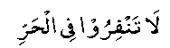
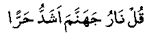

Together with the Munaafiqin who did not join in The Battle of Tabuk, there were more than eighty people from the Ansaar and an equal number from amongst the nomadic Arabs and a large number from the strangers. They themselves did not go and they encouraged others not to go as well.

"Don’t go in the heat."
Allah Ta’ala’s reply to this was:

"Say, the fire of Jahannum is of more intense heat."
From amongst the Sahaabah (RA), there were only three people who failed to join Nabi (Sallallahu Alayhi Wasallam). They were Muraarah bin Rabi, Hilal bin Umayyah and Ka'ab bin Malik (RA). Muraarah (RA) had orchards of dates, laden with fruit. He convinced himself to stay behind saying:
"I have taken part in all the battles so far. What possible harm would befall the Muslims, if I miss this one?"
He feared the loss of the entire crop in his absence and this prevented him from going out. But when he realised his mistake, he gave away in charity the whole crop and garden also which had caused him to stay behind. Hadhrat Hilal's (RA) case was different. Some of his family, who had been away for a long time, had just returned to Madinah. It was for their sake that he did not join the Battle. He had also participated in all the battles previously and thought (like Murarah (RA)) that it would not matter much if he missed just that one battle. When he came to know of the seriousness of his mistake, he made up his mind to cut off all his connections with those relatives who had been the cause of this mistake. Hadhrat Ka'ab (RA) himself explains his story in detail, which is quoted in all books of Hadith.
He says: "I had never been so well off financially as I was at the time of Tabuk. I had two she camels of my own which I never owned before. It was the habit of Nabi (Sallallahu Alayhi Wasallam) that he never disclosed the destination of his battles, but he would keep on asking about the conditions elsewhere.
But this time in view of the distance, the hot season and the strength of the enemy, he had declared his destination, so that proper preparations could be made. The number of the participants was so large that it was difficult to note down their names even, so much so, that those who were absent could hardly be noticed in the large crowd.
The gardens of Madinah were full of fruit. I intended every morning to make preparation for the journey, but somehow or the other, the days passed by and I made no progress. I was satisfied that I had all the necessary means at my disposal and that I would be ready in no time if I did once decide to do so.
I was still not yet decided when I learnt that Nabi (Sallallahu Alayhi Wasallam) had left with his companions. The idea still played in my mind that I would take a day or two to get ready and overtake the group. This delay continued till the time for Nabi (Sallallahu Alayhi Wasallam) arrival in Tabuk drew very near. I then tried to get ready but again, but somehow or the other, I did not do so. Now, when I came to look at the people left behind, I realized that there was no one in Madinah except those who had been condemned as Munaafiqeen or had been specially allowed to stay behind for certain reasons.
On reaching Tabuk, Nabi (Sallallahu Alayhi Wasallam) inquired: 'How is it that I do not see Ka'ab?' Somebody said, 'O, Nabi of Allah: His pride in wealth and ease has caused him to stay behind.' Hadhrat Ma'az (RA) interrupted and said, “No, this is wrong. As far as our knowledge goes, he is a true Muslim. However, Nabi (Sallallahu Alayhi Wasallam) kept quiet."
Hadhrat Ka'ab (RA) says: "After a few days I heard the news of Nabi (Sallallahu Alayhi Wasallam)’s return. I was struck with grief and remorse. One after the other, good excuses entered my mind and I was sure that I could escape Nabi (Sallallahu Alayhi Wasallam) anger with one of them for the time being, and later on pray for Allah’s Ta’ala forgiveness. I also sought the advice of the wise men of my family in this matter.
But when I knew that Nabi (Sallallahu Alayhi Wasallam) had actually returned, I was convinced that nothing but the truth would save me. So I decided to speak out the plain truth.
It was the noble habit of Nabi (Sallallahu Alayhi Wasallam) that whenever he returned from a journey, he would first go to the musjid and perform two rakaat 'Tahiyyatul Musjid' and then stay there for a while to meet visitors. As he sat in the musjid, the Munaafiqeen came and gave their excuses taking oaths as to why they did not accompany him on the battle. He accepted their excuses entrusting the matter to Allah Ta’ala. Just then I came and greeted him with 'salaam'.
He turned his face with a scornful smile. I begged him with the words: 'O, Nabi of Allah! You turn your face from me. By Allah! Neither am I a Munaafiq, nor do I have the least doubt in my Imaan.' He asked me to come near and I did so.
He then asked me: 'What prevented you from coming with me? Had you not purchased the she camels?’ I replied: 'O, Nabi of Allah, If I were dealing with a worldly man, then I am sure that I would escape his displeasure through (seemingly) reasonable excuses, for Allah Ta’ala has gifted me with the gift of speech. But in your case, I am sure that if I make a false statement, Allah Ta’ala would be displeased with me. On the other hand, I am sure that if I displease you by confessing the simple truth, then Allah Ta’ala would very soon make you happy with me. I, therefore, will speak the truth. By Allah, I had no excuse at all. I had never been so well to do as I was at that time.”
Nabi (Sallallahu Alayhi Wasallam) remarked: 'He is speaking the truth.' He then said to me: ‘You go away, Allah Ta’ala will decide about you.’ When I left the musjid, many people from my clan blamed me and scolded me saying, ‘Never before had you committed any wrong. If after making some good excuse for once, you had requested Nabi (Sallallahu Alayhi Wasallam) to make dua for your goodness, surely his dua would have been sufficient for you.’ I asked them if there were any more people like me. They informed me that there were two other persons viz. Hilaal bin Umayyah (RA) and Muraarah bin Rabi (RA), who also had admitted their faults like me and received the same reply from Nabi (Sallallahu Alayhi Wasallam).
I knew that both of them were very good Muslims and had taken part in the Battle of Badr. Nabi (Sallallahu Alayhi Wasallam) instructed that no one should speak with the three of us.”
It is a common rule that displeasure is shown where some love exists, and a warning is given when there is hope for correction. A warning to a hopeless person would be a useless effort.
Hadhrat Ka'ab (RA) continues: "Under the instructions of Nabi (Sallallahu Alayhi Wasallam), the Sahaabah (RA) completely boycotted us. Nobody was prepared to mix with or even speak to us. It seemed as if I was living in a strange land altogether. My own birth-place looked like a foreign land and my best friends behaved like strangers towards me.
'The earth, vast as it is, was closing up on me’ (Al-Qur-aan IX: 113].
The thing that worried me most was that, if I died in this condition, Nabi (Sallallahu Alayhi Wasallam) would not lead my Janaaza Salaah and if Nabi (Sallallahu Alayhi Wasallam) died in the meantime, I would be doomed forever, with no one to talk to me and with no one to make dua at my funeral. The other two companions of mine locked themselves in their houses.
I was the most daring of the three, I would go to the market, and join the Jamaat for Salaah, but nobody would talk to me. I would approach Nabi (Sallallahu Alayhi Wasallam) and say, 'Assa-lamu alaikum' and would watch eagerly to see if his lips moved in reply. After Fardh, I used to complete the Salaah by standing close to him, and I would look at him from the corner of my eye to learn if he ever cast a single glance at me. I noticed that when I was engaged in Salaah he did look at me, but when I was out of it, he would turn his face away from me."
Hadhrat Ka'ab (RA) continues: "When this boycott became too difficult for me to bear, I one day climbed up the wall of my dear cousin Qata-dah (RA), and greeted him with 'Assalamu-alaikum'. He did not return my greetings. I said to him, 'For Allah Ta’ala’s sake, do answer me one question. Don’t you know that I love Allah Ta’ala and His Nabi (Sallallahu Alayhi Wasallam)?' He kept quiet. I again repeated my request, but again he would not speak. When I asked for the third time, he simply said, 'Allah and His Nabi (Sallallahu Alayhi Wasallam) know best.' At this, tears flowed out of my eyes and he left me alone."
"Once, I was passing through a street of Madinah, when I noticed a Coptic Christian, who had come from Syria to sell his grain, inquiring about Kaab-bin-Malik. When the people pointed me out to him, he came and made over a letter to me from the Christian King of Ghassan. It read: 'We have come to know that your master has ill-treated you. Allah Ta’ala will not keep you in disgrace. You better come to us. We shall extend all help to you.' When I read this letter, I uttered: "Inna-lillahi-wa-Inna-ilaihi-raaji-oon" To Allah we belong and to Him is our return; and said; 'So my state of affairs (had) reached such a low point that even the Kaafirs were wishing to draw me away from Islam.' I could not imagine a calamity worse than that. I went and threw the letter into an oven. Thereafter I presented myself to Nabi (Sallallahu Alayhi Wasallam) and exclaimed: 'O, Nabi of Allah Ta’ala! Your indifference towards me has lowered me to such an extent that even the Kafirs are building up their hopes over me."
When forty days had passed in this condition, a messenger of Nabi (Sallallahu Alayhi Wasallam)’s brought me this command: ‘Be separated from your wife, ' I asked him, 'Am I to divorce her?' He replied: 'No, only be separated.’ A similar message was delivered to my other two companions as well. I therefore said to my wife: ‘Go to your parents and wait till Allah Ta’ala decides my case.'
Hadhrat Hilaal's (RA) wife went to Nabi (Sallallahu Alayhi Wasallam)’s and said; 'O, Nabi of Allah! Hilaal (RA) is an old man and there is nobody else to look after him. If I go away from him, he will die. If it is not very serious, kindly permit me to keep attending to him.'
Nabi (Sallallahu Alayhi Wasallam)’s replied; 'There is no harm.’
Hadhrat Ka'ab (RA) says: "It was suggested to me that I might also request Nabi (Sallallahu Alayhi Wasallam) for permission to keep my wife with me for my service, but I said; 'Hilaal is old, while I am young. I do not know what reply I shall get and, as such, I have no courage to make the request.’
Another ten days had passed and now our trial had lasted for a full fifty days. On the morning of the fiftieth day, I had performed my Fajar Salaah and was sitting on the roof of my house stricken with grief. The earth had closed upon me and life had become miserable for me. I heard an announcer from over the top of mount Sula; 'Glad tidings to you, O, Kaab.' The moment I heard this, I fell on the ground in sajdah and tears of joy rolled down my cheeks, as I understood that our test was now over.
In fact, after the Salaah that morning, Nabi (Sallallahu Alayhi Wasallam)’s had announced the Divine forgiveness for all three of us. At this, a person ran up to the top of the mountain and announced the forgiveness in a loud voice and this was the cry that had reached me. Thereafter, a rider came galloping to deliver the same happy news to me.
The clothes that I was wearing were given away as a gift, to the messenger of glad tidings. I swear by Allah Ta’ala, that I had no other clothes in my possession at that time. I dressed up by borrowing clothes from some friend and went to Nabi (Sallallahu Alayhi Wasallam). As I entered the musjid, the people in the audience of Nabi (Sallallahu Alayhi Wasallam) ran to congratulate me. Hadhrat Abu Talha (RA) was the first to approach me. He shook my hand with such warmth that I shall never forget.
Thereafter I made salaam to Nabi (Sallallahu Alayhi Wasallam). I found his face beaming and radiant like the full moon. This was usual with him at times of extreme joy. I said to him, 'O, Nabi of Allah! I propose to give away in charity all that I possess as thanks for the acceptance of my Taubah.’ He said: 'This will be too much for you. Keep a portion with you.' I agreed to keep my share of the booty that fell in our hands in the Battle of Khaibar.’
Hadhrat Ka'ab (RA) says: "It is the truth that had brought me salvation, and as such I am determined to speak nothing but the truth in the future."
The above story brings out the following outstanding characteristics of the Muslims of that time:
1. The importance of striving in the path of Allah Ta’ala. Even those who had faithfully participated in every battle, had to bear the brunt of Nabi (Sallallahu alayhi wasallam) anger when they failed to respond to Allah’s Ta’ala call, even though it was for the first time in their lives.
2. Their devotion and obedience to Nabi (Sallallahu Alayhi Wasallam). For full fifty days the whole Muslim community, including their nearest and dearest ones, would not speak to the three persons, in obedience to Nabi (Sallallahu Alayhi Wasallam) orders. The three people themselves went most steadfastly through the suffering imposed on them.
3. Their strong faith. Hadhrat Ka’ab (RA) was so much perturbed when he received the letter from the Christian King, inciting him against Nabi (Sallallahu Alayhi Wasallam). His words and his action at that time are a testimony to the strong faith in his heart.
Let us search our hearts and see how much devotion we have in fulfilling our obligations to Allah Ta’ala. Leaving aside Zakaat and Hajj, which involve the sacrifice of money, and taking the case of Salaah alone, which is the most important pillar of Islam after Imaan, how many of us are particular about it?